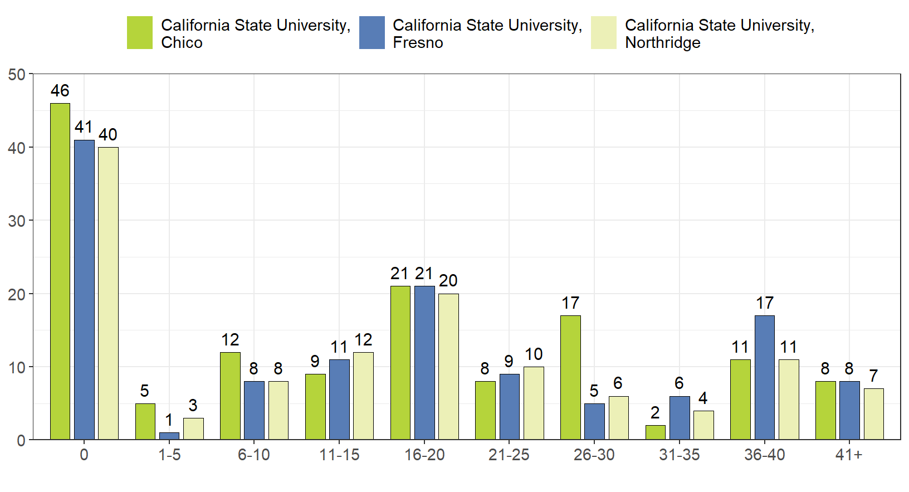
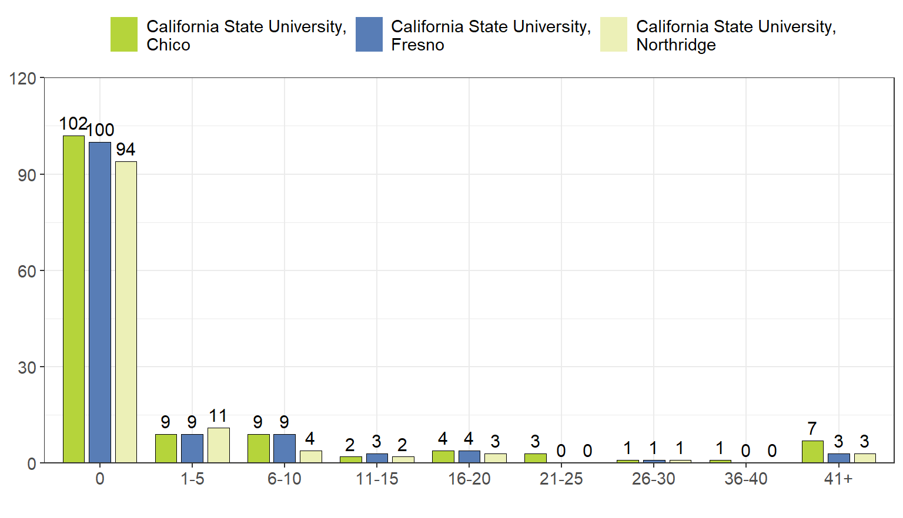
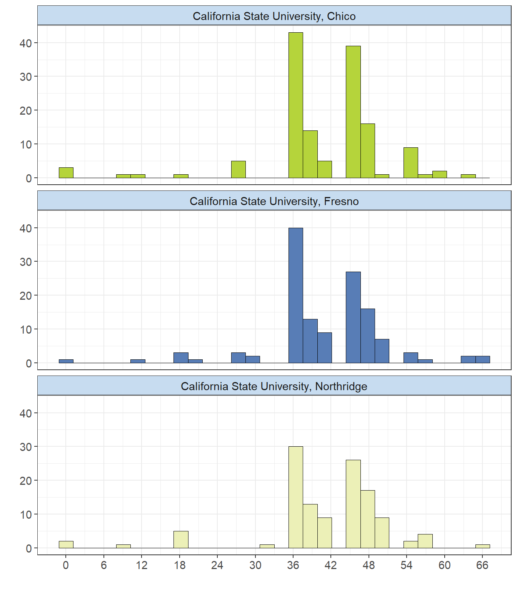
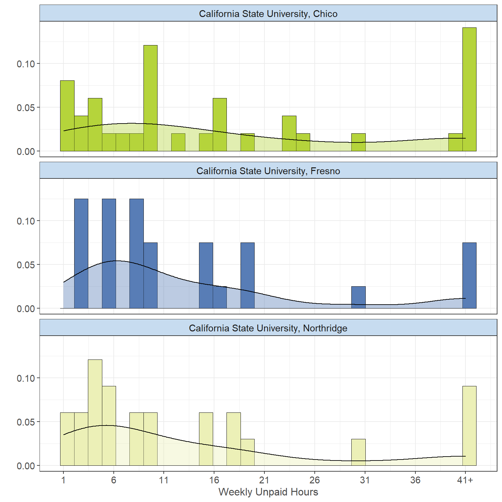
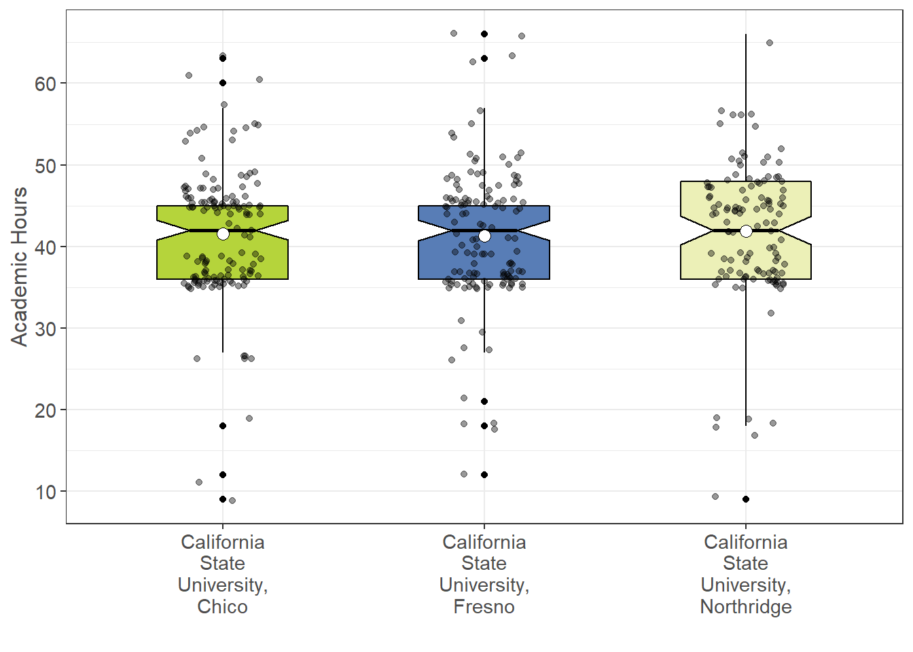
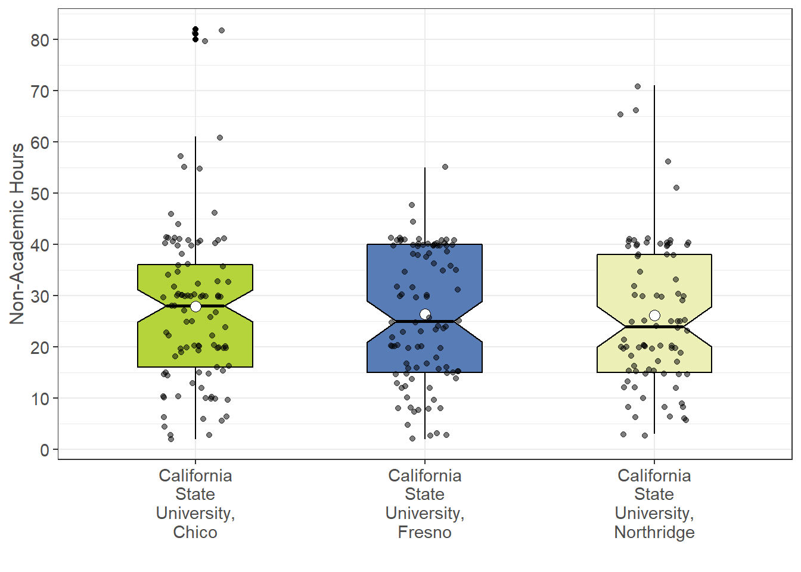
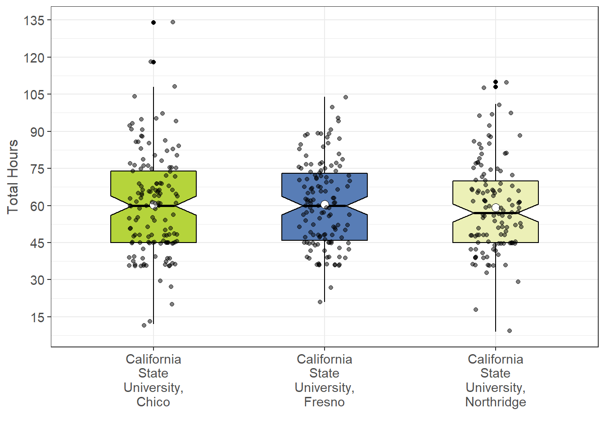

Workload by Campus
The following is a comparison across the 3 campuses (Chico, Fresno, and Northridge) for information relating to the workload taken on by students, both academic and non-academic. This includes both paid/unpaid hours worked per week, as well as the academic workload taken on by students. A total of the hours worked each week is also looked at for each campus. The purpose is to see if any key differences are seen between the campuses, or if similar information is captured among them.
Paid Hours Per Week

Exact Hour Breakdown
Note: below hours were filtered to only include people that worked (> 0 hours) a paid job. The value “41+” was also rounded to 41 for the graph/calculations.  Looking at the breakdown of both graphs, the distribution of paid weekly hours worked across all campuses seem to be mostly similar. CSU Northridge has a mean value of 23.59 hours and a median of 20 hours. CSU Fresno, which seems to have students who tend to work more hours, has a mean value of 25.29 hours and a median of 23.5 hours. CSU Chico has a mean value of 23.17 hours and a median of 20 hours.
Unpaid Hours Per Week

Exact Hour Breakdown
Note: below hours were filtered to only include people that worked (> 0 hours) an unpaid job. The value “41+” was also rounded to 41 for the graph/calculations.  Looking at the breakdown of both graphs, the distribution of unpaid weekly hours worked for Northridge and Fresno seem to be almost identical while Chico seems to have students who work more unpaid weekly hours. CSU Northridge has a mean value of 13.17 hours and a median of 8 hours. CSU Fresno has a mean value of 13.28 hours and a median of 8 hours. CSU Chico has a mean value of 17.53 hours and a median of 11 hours.
Academic Hours
 Note: values corresponding to “22+” were rounded to 22. Values were also filtered so that only people who take classes (> 0 hours per week) were included.
Looking at the academic hours across each campus, it seems that the distribution seems very similar for each. CSU Chico has an average unit workload of 41.57 units, and a median of 42 units. CSU Fresno has an average unit workload of 41.31 units, and a median of 42 units. CSU Northridge has an average unit workload of 41.9 units, and a median of 43.5 units.
Non-Academic Hours
 Note: values corresponding to “41+” were rounded to 41. Values were also filtered so that only people who work (> 0 hours per week) were included.
Looking at the non-academic workload across each campus, it seems the distributions are similar for Fresno and Northridge while Chico seems to have students who work more paid/unpaid weekly hours. CSU Chico has an average non-academic workload of 27.86 hours, and a median of 28 hours. CSU Fresno has an average non-academic workload of 26.39 hours, and a median of 25 hours. CSU Northridge has an average non-academic workload of 26.2 hours, and a median of 24 hours.
Total Workload Hours
 Note: values corresponding to “41+” were rounded to 41, as well as values corresponding to “22+” being rounded to 22. Values were also filtered so that only people who work (> 0 hours per week) were included.
Looking at the total workload hours across each campus, again it seems that the distribution are very similar for each. CSU Chico has an average total workload of 60.31 hours, and a median of 60.5 hours. CSU Fresno has an average total workload of 60.53 hours, and a median of 60 hours. CSU Northridge has an average total workload of 59.26 hours, and a median of 57 hours. A small number of students also claim to work over 100 hours per week across academic and non-academic jobs.
Student Demographics
Click here to go to the Personal Demographics page.
Personal Demographics
Click here to go to the Personal Demographics page.
Funding
Partially funded by USDA SNAP, known in California as CalFresh, an equal opportunity provider and employer, and the California Department of Social Services. Any use of these results in further work must use the following citation:Center for Healthy Communities, "Basic Needs Survey", June 2020. Retrieved on xx-xxx-xxxx from https://chicocalfresh.github.io/bns-website/index.html